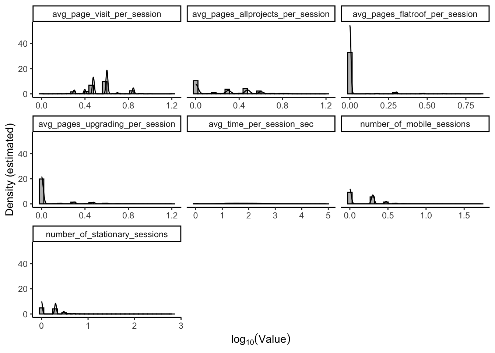

library(tidyverse)
theme_set(theme_light())
library(Rcpp)
library(here)
source(here("src/R/r_functions.r"))
sourceCpp(here("src/R/cpp_functions.cpp"))
data_file = here("data/data.csv")
df = read_delim(data_file, delim = ",", show_col_types = FALSE)
target = "project_type"First look at data
Missingness
We first do a quick check of the completeness of the data.
df %>%
{nrow(.) - nrow(na.omit(.))} %>%
sprintf("There are %i rows with missing data", .) %>%
catThere are 0 rows with missing dataTarget variable overview
Let us first have a quick look at the classes in the target variable:
df %>%
pull(target) %>%
table.
allprojects atticrenovation extension loftconversion
1 7 26 45
newbuild no_project_intent renovation replacement
8 98389 558 509
reroofing upgrading
38 419 Initial thoughts:
- The immediate approach here is be a two-stage model:
- First, divide into
no_project_intentandany_project_intentand make a classifier for likelihood of any intent. That is, we try to answer the question ‘can we distinguis between those with intent and those with no intent?’. - Second, drop all
no_project_intentand make a multiclass classifier of likelihood of each individual class vs. the remaining. That is, we try to answer the question ‘among those with project intent, can we classify the intent’? - For the first part, we note the heavy imbalance towards the negative label. This is not problematic in and of itself, but we must keep it in the back of our minds when designing a model.
- For the second part, we note that there are many classes with very little data. Judging purely by the names, it seems that some of these may somewhat overlap and can therefore be grouped. Lacking access to a subject matter expert, we observe the following:
atticrenovationandloftconversionare possibly synonomous. One could similarly argue that they both fall under the category ofrenovation.newbuildandextensionhave of similar flavour, in the sense that both are constructions projects and likely very costly projects. Similarly, we could argue thatreroofing, although a different type of construction project, is also a construction project.- Two quick Google searches for
Velux replacement/Velux upgradingindicates that the typesreplacementandupgradingare window related. all_projectsis extremely rare and can just be removed.
Grouping the projects as above leaves us with two datasets for analysis: one with a target variable that looks like the below
df %>%
pull(target) %>%
{
ifelse(
. == "no_project_intent",
0,
1
)
} %>%
table.
0 1
98389 1611 And a smaller dataset with a target variable that looks like this:
renovation_types = c("atticrenovation", "loftconversion", "renovation")
construction_types = c("newbuild", "extension", "reroofing")
window_types = c("replacement", "upgrading")
df %>%
filter(
!(!!sym(target) %in% c("allprojects", "no_project_intent"))
) %>%
mutate(
new_target = case_when(
!!sym(target) %in% renovation_types ~ "renovation",
!!sym(target) %in% construction_types ~ "construction",
!!sym(target) %in% window_types ~ "windows",
TRUE ~ !!sym(target)
)
) %>%
pull(new_target) %>%
table.
construction renovation windows
72 610 928 Intended use considerations
In the above, we have implicitly assumed that the goal of the aforementioned models is to distinguish buyers from non-buyers and, in addition, distinguish the type of project that a predicted buyer is most interested in. This would, for example, be the case if the end goal of producing the model is to identify possible intervention sites to increase sales. I.e., if we can identify a potential customer with intent, then, by identifying the most likely type of intent said customer has, we can make targeted ‘ads’ to push the customer in the right direction. Additionally, we may be able to identify fringe customers and produce targeted campaigns (e.g., ‘strike now and get x% off your purchase’ campaigns) to drive up their willingness to buy.
As always, models come with pitfalls and the above two are no exceptions. If we mean to identify intervention sites, the causal structure of the underlying mechanisms become important. For instance, suppose the variable duration_of_pages_newbuild_sec is a very strong predictor of a predicted customer being interested in starting a construction project. If duration_of_pages_newbuild_sec is actually a child of project_type in the causal graph (e.g., because it simply takes a very long time to plan a newbuild, so already decided customers will necessarily have a high view-time), then intervening on a customer identified due to having a high view-time on newbuild pages might be counterproductive. Suppose, for example, we intervene by making a targeted campaign of the ‘strike now and get x% off your purchase’ type. We then stand to lose money, because we are using a predictor that is downstream of the decision to make a newbuild purchase. Or, in other words, that customer was going to start a newbuild project either way, so reducing their price has directly reduced profit. Possible intervention sites can, however, be A/B tested post identification.
Covariate exploration
Overview and screening of variables
With very wide data that we do not know and where subject matter experts are not available, a good starting point would often be to start with a PCA or screen the Markov blanket with LASSO or similar. However, with with this data, I feel that it’s just small enough and has sufficiently self-explanatory names, that we may get good results by getting our fingers into the data and taking a look at the individual columns to reduce the dimensions.
Non-informative columns
The covariate space spans 102 columns, so we start by doing a quick check for whether any columns with zero information are present to see if we can reduce it slightly. That is, we check whether any columns are constants across all rows, as these will serve no modelling purposes.
constant_columns = df %>%
summarise_all(FastUniqueC) %>%
as.matrix %>%
{
bool_vector = .[1,]
bool_vector[bool_vector]
} %>%
names
print_variables("The following varibles have no variation:", constant_columns)The following varibles have no variation::
customer_country
number_of_clicked_banners_outside_veluxThus, we note that all data stems from France and that the number_of_clicked_banners_outside_velux is constantly zero. We will therefore omit these columns when doing any kind of inference.
Name patterns
Let us additionally do a quick inspection of the variable names to see if we can spot any kind of patterns.
categorical_columns = df %>%
select(where(~ is.character(.x))) %>%
colnames %>%
sort
numeric_columns = df %>%
select(where(~ !is.character(.x))) %>%
colnames %>%
sort
print_variables("Categorical vriables", categorical_columns, 2)Categorical vriables:
customer_country, final_id
first_brproject, first_brspace
most_frequent_page, most_frequent_page_project_type
most_frequent_page_space_type, project_type
second_frequent_page, second_frequent_page_project_type
second_frequent_page_space_type, space_type
tag_project_last_visited_page, tag_space_last_visited_page
third_frequent_page, third_frequent_page_project_type
third_frequent_page_space_typeprint_variables("Numeric variables", numeric_columns, 2)Numeric variables:
avg_page_visit_per_session, avg_pages_allprojects_per_session
avg_pages_allspaces_per_session, avg_pages_bathroom_per_session
avg_pages_bedroom_per_session, avg_pages_extension_per_session
avg_pages_flatroof_per_session, avg_pages_hallwaycorridor_per_session
avg_pages_homeoffice_per_session, avg_pages_kidsroom_per_session
avg_pages_kitchen_per_session, avg_pages_livingroom_per_session
avg_pages_loftconversion_per_session, avg_pages_newbuild_per_session
avg_pages_renovation_per_session, avg_pages_replacement_per_session
avg_pages_reroofing_per_session, avg_pages_upgrading_per_session
avg_time_per_session_sec, duration_of_pages_allprojects_sec
duration_of_pages_allspaces_sec, duration_of_pages_bathroom_sec
duration_of_pages_bedroom_sec, duration_of_pages_extension_sec
duration_of_pages_flatroof_sec, duration_of_pages_hallwaycorridor_sec
duration_of_pages_homeoffice_sec, duration_of_pages_kidsroom_sec
duration_of_pages_kitchen_sec, duration_of_pages_livingroom_sec
duration_of_pages_loftconversion_sec, duration_of_pages_newbuild_sec
duration_of_pages_renovation_sec, duration_of_pages_replacement_sec
duration_of_pages_reroofing_sec, duration_of_pages_upgrading_sec
if_brproject, if_brspace
if_intent, if_project_intent_changed
if_returning_customer, if_space_intent_changed
if_visited_marketing_domain_flag, number_of_clicked_banners
number_of_clicked_banners_on_velux, number_of_clicked_banners_outside_velux
number_of_form_submit_visits, number_of_friday_events
number_of_hour_1_6_events, number_of_hour_13_18_events
number_of_hour_19_24_events, number_of_hour_7_12_events
number_of_ipad_sessions, number_of_mobile_sessions
number_of_moday_events, number_of_page_to_trigger
number_of_page_views, number_of_pages_allprojects
number_of_pages_allspaces, number_of_pages_bathroom
number_of_pages_bedroom, number_of_pages_extension
number_of_pages_flatroof, number_of_pages_hallwaycorridor
number_of_pages_homeoffice, number_of_pages_kidsroom
number_of_pages_kitchen, number_of_pages_livingroom
number_of_pages_loftconversion, number_of_pages_newbuild
number_of_pages_renovation, number_of_pages_replacement
number_of_pages_reroofing, number_of_pages_upgrading
number_of_saturday_events, number_of_sessions
number_of_stationary_sessions, number_of_submited_forms
number_of_sunday_events, number_of_thursday_events
number_of_tuesday_events, number_of_unique_page_views
number_of_unique_project_type, number_of_unique_space_type
number_of_wednesday_events, total_time_of_sessions_secBased on this (quite lengthy) output, we quickly spot a few things:
- There is a
final_idwhich, presumably, identifies a customer. The ID is, however, not a unique identifier, as there are only 89340 entries (of 100000). This indicates that some customers are probably return customers. This is further corroborated by the existence ofif_returning_customer. - Note, however, that a
final_idappearing \(>1\) times does not necessarily mean that they have had any project intent in any of their visits/sessions. For instance, the ID634cfa8426a6cc51fa67805dappears four times, but each time withif_returning_customer == 0andproject_type == 'no_project_intent'. The rows are not duplicates of one another. These, if I understand them correctly, introduce some kind of longitudinal dependence which is not desirable, so the rows likely have to be aggregated to unique IDs somehow. We note, however, that nofinal_idhas multiple distinctproject_typeentries. - The variable
if_intentis an indicator ofproject_type == 'no_project_intent'and should thus not be used for modelling. - In addition, I am wary of the
if_brprojectvariable, not knowing whatbrstands for. We leave it out, just to be on the safe side that we do not include a variable that lies downstream in the causal graph ofproject_type. This, however, should be verified with a subject matter expert. - In a similar fashion, the variables
if_<space/project>_intent_changedseem like derived variables that may be dangerous to keep. To be safe, we exlude these as well. - The categorical variables seem to mostly be a ranking of the most visited pages, of which there very many. For instance,
most_frequent_pagehas 896 unique entries. To use any of these, we’d likely pick out some ‘extra interesting’ (with the help of a subject matter expert) pages and make indicators of whether these were the most frequently visited. For now, we’ll simply omit all categorical variables. - There references to
spaces, which seems to be a more finely grained partition of the project typesrenovation,replacementandupgradinginto rooms of the house. space_intentseems to be a derived variable that is known only afterproject_typeis known, since \[{project\_type} = {no\_project\_intent} \Rightarrow {space\_type} = {no\_space\_intent}\] but not the reverse. Thus, we omit thespace_typevariable. To be safe, we also omit the related (but not entirely clear) indicatorif_brspace.- Of the numeric columns, many seem to be variants of the same thing. That is, many variables follow a pattern of
<avg / number_of_pages / duration_of>_<project/space type>. Thus, we expect these be derived versions of one another and therefore highly correlated.- For instance, the variables
avg_pages_renovation_per_sessionandnumber_of_pages_pages_renovationare a correlation of 0.91 (\(p < 2.2\times 10^{-16}\)). - The pair (
number_of_pages/avg_pages,duration_of) variables are unlikely to be as highly correlated, but we still observe a non-negligible correlation. For example, the correlation betweennumber_of_pages_pages_renovationandduration_of_pages_renovation_sechave a correlation ofround(cor(df$number_of_pages_pages_renovation, df$duration_of_pages_renovation_sec), 3)(\(p < 2.2\times 10^{-16}\)). - Thus, to be safe, we choose only one of these types of variables to focus on.
- For instance, the variables
- The
avgcolumns comes inavg_pages_<space/project>_...variants, which we expect are also collinear to some dregree:
space_variables = df %>%
pull(space_type) %>%
unique %>%
{
match_string = paste0(., collapse = "|")
df %>%
select(contains("avg"), space_type) %>%
select(matches(match_string))
} %>%
colnames
project_variables = df %>%
select(contains("avg"), project_type) %>%
pull(project_type) %>%
unique %>%
{
match_string = paste0(., collapse = "|")
df %>%
select(contains("avg"), project_type) %>%
select(matches(match_string))
} %>%
colnames
# Get the pairwise correlations and print the most highly correlated ones:
sorted_correlations = lapply(
space_variables,
function(x) {
lapply(
project_variables,
function(y) {
correlation = cor.test(
df %>% pull(x),
df %>% pull(y)
)
tibble(
"space_variable" = x,
"project_variable" = y,
"abs_cor" = correlation$estimate %>% abs,
"marginally_significant" = correlation$p.value < 0.05
)
}
) %>%
do.call("rbind", .)
}
) %>% do.call("rbind", .) %>%
arrange(desc(abs_cor))
print(sorted_correlations, n = 10)# A tibble: 56 × 4
space_variable project_variable abs_cor marginally_significant
<chr> <chr> <dbl> <lgl>
1 avg_pages_allspaces_per_sess… avg_pages_allpr… 0.826 TRUE
2 avg_pages_bedroom_per_session avg_pages_upgra… 0.406 TRUE
3 avg_pages_allspaces_per_sess… avg_pages_upgra… 0.370 TRUE
4 avg_pages_kitchen_per_session avg_pages_renov… 0.209 TRUE
5 avg_pages_allspaces_per_sess… avg_pages_renov… 0.159 TRUE
6 avg_pages_homeoffice_per_ses… avg_pages_renov… 0.150 TRUE
7 avg_pages_allspaces_per_sess… avg_pages_repla… 0.0990 TRUE
8 avg_pages_bedroom_per_session avg_pages_allpr… 0.0940 TRUE
9 avg_pages_livingroom_per_ses… avg_pages_renov… 0.0868 TRUE
10 avg_pages_livingroom_per_ses… avg_pages_allpr… 0.0849 TRUE
# ℹ 46 more rows- Based on the above overview, there are definitely quite a few non-zero correlations between the
spaceandprojectvariants of theavgcolumns. In addition, 35 of 56 are marginally significant when testing for non-zero correlations. Thus, to be safe, we omit allspacevariants of theavgvariables. - There remain, some
number_ofcolumns that do not follow thenumber_of_pages_<project/space type>. Let us do a quick investigation of the name patterns of just those. To ease readability, we remove thenumber_of_prefix of these when printing:
df %>%
select(
contains("number_of"),
-contains("number_of_page")
) %>%
colnames %>%
str_replace(., "number_of_", "") %>%
sort %>%
cat(sep = "\n")clicked_banners
clicked_banners_on_velux
clicked_banners_outside_velux
form_submit_visits
friday_events
hour_1_6_events
hour_13_18_events
hour_19_24_events
hour_7_12_events
ipad_sessions
mobile_sessions
moday_events
saturday_events
sessions
stationary_sessions
submited_forms
sunday_events
thursday_events
tuesday_events
unique_page_views
unique_project_type
unique_space_type
wednesday_events- Based on the above output, we observe the following:
clicked_bannersis likely equal toclicked_banners_on_velux, since we have previously observed thatclicked_banners_outside_veluxis constant at zero (and will be removed). Thus, only one of these should be used.number_of_sessionsis likely just the sum of the individualnumber_of_ipad_sessions,number_of_mobile_sessionsandnumber_of_stationary_sessions. It may be relevant to distinguish the device the user views the site on, so we scrap onlynumber_of_sessions.- There are many variables that indicate when the user was most active, e.g.,
number_of_<time>_eventsandnumber_of_<weekday>_events. These should be fine to keep - It seems that the numeric variables are structured such that, for each project type and space type, there exists the
avg / number_of_pages / duration_offor columns for that particular space/project. However, we may note that no such columns exist for theatticrenovationcategory. - Lastly, we note that there is both a
total_time_of_sessions_secand aavg_time_per_session_sec, which we expect to be highly correlated. Indeed, they have a correlation of 0.83 (\(p < 2.2 \times 10^{-16}\)), so we omittotal_time_of_sessions_sec
Omitting categories by the above considerations leaves us with a reduced dataset:
X = df %>%
select(
where(is.numeric),
-contains("duration_of"),
-contains("number_of_page"),
-if_intent,
-if_brspace,
-if_brproject,
-contains("clicked_banners_"),
-number_of_sessions,
-if_project_intent_changed,
-if_space_intent_changed,
-all_of(space_variables),
-total_time_of_sessions_sec
)This reduced dataset now has ncol(X) columns.
There is, however, still a chance that we are keeping highly collinear variables, We therefore do a quick check of the pairwise correlations among all pairs and print the top correlations:
print(get_pairwise_correlations(X), n = 30)# A tibble: 561 × 3
row column abs_cor
<chr> <chr> <dbl>
1 number_of_unique_project_type number_of_submited_forms 0.894
2 if_visited_marketing_domain_flag avg_pages_allprojects_per_session 0.590
3 avg_page_visit_per_session number_of_unique_page_views 0.582
4 number_of_hour_1_6_events number_of_stationary_sessions 0.535
5 number_of_hour_19_24_events number_of_stationary_sessions 0.502
6 number_of_hour_13_18_events number_of_stationary_sessions 0.471
7 number_of_hour_7_12_events number_of_stationary_sessions 0.438
8 number_of_unique_space_type number_of_submited_forms 0.418
9 avg_page_visit_per_session if_returning_customer 0.378
10 number_of_moday_events number_of_stationary_sessions 0.375
11 avg_pages_allprojects_per_session avg_page_visit_per_session 0.374
12 number_of_friday_events number_of_stationary_sessions 0.366
13 if_returning_customer number_of_mobile_sessions 0.362
14 number_of_unique_space_type number_of_unique_project_type 0.356
15 number_of_saturday_events number_of_stationary_sessions 0.340
16 number_of_thursday_events number_of_stationary_sessions 0.340
17 avg_pages_upgrading_per_session number_of_clicked_banners 0.340
18 number_of_tuesday_events number_of_stationary_sessions 0.333
19 number_of_sunday_events number_of_stationary_sessions 0.332
20 number_of_wednesday_events number_of_stationary_sessions 0.304
21 number_of_hour_19_24_events number_of_sunday_events 0.284
22 number_of_unique_page_views number_of_clicked_banners 0.283
23 number_of_hour_19_24_events number_of_hour_1_6_events 0.275
24 if_visited_marketing_domain_flag avg_pages_upgrading_per_session 0.270
25 number_of_hour_7_12_events number_of_thursday_events 0.259
26 number_of_hour_1_6_events number_of_friday_events 0.256
27 number_of_hour_7_12_events number_of_moday_events 0.254
28 number_of_hour_1_6_events number_of_saturday_events 0.251
29 number_of_hour_19_24_events number_of_saturday_events 0.249
30 number_of_hour_13_18_events number_of_friday_events 0.233
# ℹ 531 more rowsBased on this output, we definitely have not caught all highly correlated varibles. We do observe that number_of_stationary_sessions tends correlate highly with all time-related variables (i.e., number_of_<time>_... and number_of_<weekday>_... variables). Thus, we should either omit all those variables or the number_of_stationary_sessions. To simplify matters, we keep only number_of_stationary_sessions. Similarly, we note that number_of_submitted_forms correlates highly with both number_of_unique_project_type and number_of_unique_space_type so, by the same logic, we keep here only number_of_submitted_forms.
X = X %>%
select(
-number_of_hour_1_6_events,
-number_of_hour_7_12_events,
-number_of_hour_13_18_events,
-number_of_hour_19_24_events,
-number_of_moday_events,
-number_of_tuesday_events,
-number_of_wednesday_events,
-number_of_thursday_events,
-number_of_friday_events,
-number_of_saturday_events,
-number_of_sunday_events,
-number_of_unique_project_type,
-number_of_unique_space_type
)This leaves us with a total of ncol(X) candidate covariates. Some of these remain collinear, but we will handle that during the modelling process. Before moving on, we print these for an overview of what’s left:
X %>%
colnames %>%
sort %>%
cat(sep = "\n")avg_page_visit_per_session
avg_pages_allprojects_per_session
avg_pages_extension_per_session
avg_pages_flatroof_per_session
avg_pages_hallwaycorridor_per_session
avg_pages_loftconversion_per_session
avg_pages_newbuild_per_session
avg_pages_renovation_per_session
avg_pages_replacement_per_session
avg_pages_reroofing_per_session
avg_pages_upgrading_per_session
avg_time_per_session_sec
if_returning_customer
if_visited_marketing_domain_flag
number_of_clicked_banners
number_of_form_submit_visits
number_of_ipad_sessions
number_of_mobile_sessions
number_of_stationary_sessions
number_of_submited_forms
number_of_unique_page_viewsAn inspection of the screened variables
Based on the above considerations, we take a closer look at the screened variables marginal distributions.
First, let us get an overview of what they each contain:
X %>%
pivot_longer(
cols = all_of(colnames(X)),
names_to = "variable",
values_to = "value"
) %>%
group_by(variable) %>%
summarise(
"n unique" = length(unique(value)),
"Mean (SD)" = sprintf(
"%.2f (%.2f)",
mean(value),
sd(value)
),
"Range" = sprintf(
"%.0f--%.0f",
min(value),
max(value)
)
) %>%
arrange(`n unique`) %>%
print(n = ncol(X))# A tibble: 21 × 4
variable `n unique` `Mean (SD)` Range
<chr> <int> <chr> <chr>
1 if_returning_customer 2 0.27 (0.44) 0--1
2 if_visited_marketing_domain_flag 2 0.65 (0.48) 0--1
3 number_of_submited_forms 7 0.01 (0.09) 0--7
4 avg_pages_hallwaycorridor_per_session 9 0.00 (0.07) 0--3
5 avg_pages_extension_per_session 10 0.00 (0.04) 0--3
6 number_of_form_submit_visits 10 0.12 (0.44) 0--13
7 avg_pages_loftconversion_per_session 13 0.00 (0.08) 0--6
8 avg_pages_reroofing_per_session 13 0.00 (0.04) 0--5
9 number_of_ipad_sessions 13 0.02 (0.30) 0--65
10 number_of_unique_page_views 13 2.68 (1.21) 1--13
11 avg_pages_newbuild_per_session 14 0.00 (0.04) 0--3
12 number_of_clicked_banners 15 0.15 (0.62) 0--15
13 avg_pages_renovation_per_session 19 0.03 (0.19) 0--5
14 avg_pages_replacement_per_session 19 0.03 (0.22) 0--6
15 number_of_mobile_sessions 23 0.67 (1.01) 0--51
16 avg_pages_flatroof_per_session 24 0.06 (0.32) 0--6
17 avg_page_visit_per_session 34 2.80 (1.54) 0--15
18 avg_pages_upgrading_per_session 38 0.30 (0.80) 0--15
19 avg_pages_allprojects_per_session 49 1.10 (1.34) 0--15
20 number_of_stationary_sessions 71 0.79 (3.16) 0--647
21 avg_time_per_session_sec 6519 249.32 (1187.79) 0--85345Based on this output, we observe the following:
- The
if_...variables are binary and are fine to be kept as is. - Almost all of the remaining variables are heavily right-skewed. Many of these are likely fine when transformed \(x \mapsto \log(x + 1)\).
- Many variables have very few non-zero values (as evidenced by the mean and standard deviation being approximately zero). These may benefit turned into categorical/binary variables tracking
none/anyor0/1/2+or similarly. However, at first we leave these as is and return if they turn out to be problematic
Figures
The only variables with, seemingly, a lot of movement are number_of_mobile_sessions, avg_pages_flatroof_per_session, avg_page_visit_per_session, avg_pages_upgrading_per_session, avg_pages_allprojects_per_session, number_of_stationary_sessions and avg_time_per_session_sec. We plot histograms of these on a \(x \mapsto \log_{10}(x)\) scale:
variables_with_movement = c(
"number_of_mobile_sessions",
"avg_pages_flatroof_per_session",
"avg_page_visit_per_session",
"avg_pages_upgrading_per_session",
"avg_pages_allprojects_per_session",
"number_of_stationary_sessions",
"avg_time_per_session_sec"
)
plotdata = X %>%
select(all_of(variables_with_movement)) %>%
pivot_longer(
cols = all_of(variables_with_movement),
names_to = "Variable",
values_to = "Value"
) %>%
mutate(
Value = log10(Value + 1)
)
ggplot(
data = plotdata,
aes(
x = Value
)
) +
geom_histogram(
aes(y = after_stat(..density..)),
fill = "grey",
color = "black"
) +
geom_density() +
facet_wrap(
~Variable,
scales = "free_x"
) +
labs(
y = "Density (estimated)",
x = expression(log[10](Value))
)`stat_bin()` using `bins = 30`. Pick better value with `binwidth`.